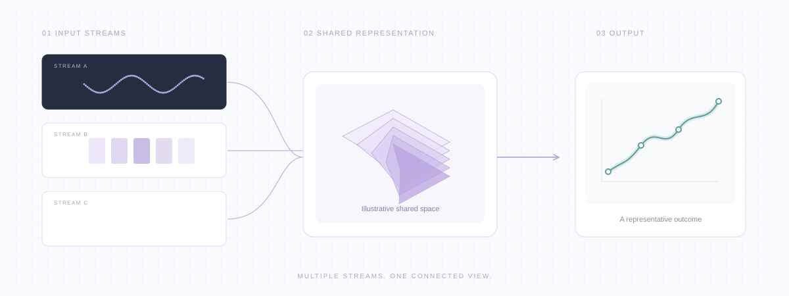
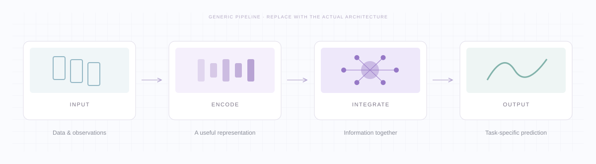

Multi-EVT
i
PROJECT OVERVIEW

01 / THE IDEA
A closer look at Multi-EVT.
Abstract
02 / IN MOTION
See it in action.
03 / UNDER THE HOOD
From input to insight.

04 / THE EVIDENCE
Measured, side by side.
Scope & limitations
05 / EXPLORE FURTHER
Materials for review.
Anonymous citation
BIBTEX · ANONYMOUS DRAFT